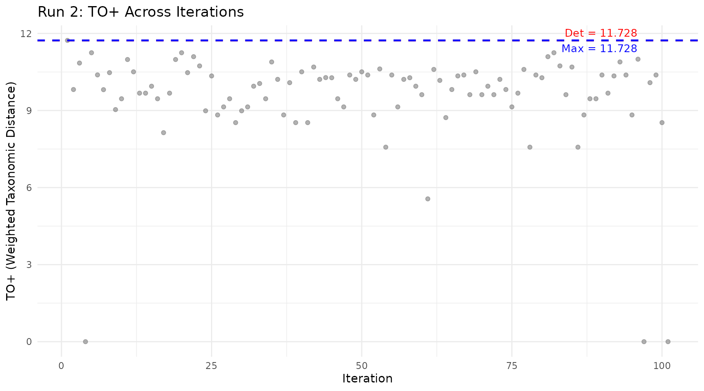
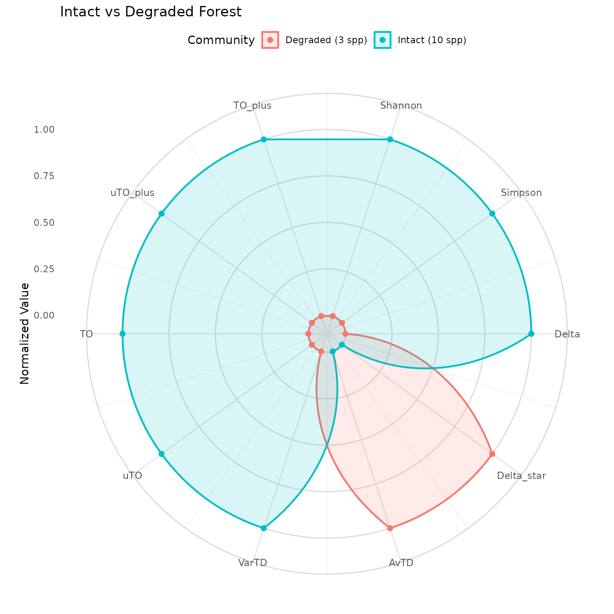

Ozkan pTO Method: Deng Entropy-Based Taxonomic Diversity
Source:vignettes/ozkan-pto.Rmd
ozkan-pto.RmdWhat Is the Ozkan pTO Method?
Ozkan (2018) introduced a novel approach to measuring taxonomic diversity using Deng entropy — a generalization of Shannon entropy rooted in Dempster-Shafer evidence theory (Dempster, 1967; Shafer, 1976). Ozkan & Mert (2022) extended this with reinforced estimators that use stochastic resampling (Run 2) and sensitivity analysis (Run 3) to refine the indices.
The key idea: at each level of the taxonomic hierarchy (genus, family, order, etc.), Deng entropy measures how evenly species are distributed across groups. The product of these level-wise entropies gives a single number that captures the entire hierarchical diversity of a community.
This approach produces 8 complementary indices through a three-stage pipeline, each answering a slightly different question about the community.
library(taxdiv)
community <- c(
Quercus_coccifera = 25,
Quercus_infectoria = 18,
Pinus_brutia = 30,
Pinus_nigra = 12,
Juniperus_excelsa = 8,
Juniperus_oxycedrus = 6,
Arbutus_andrachne = 15,
Styrax_officinalis = 4,
Cercis_siliquastrum = 3,
Olea_europaea = 10
)
tax_tree <- build_tax_tree(
species = names(community),
Genus = c("Quercus", "Quercus", "Pinus", "Pinus",
"Juniperus", "Juniperus", "Arbutus", "Styrax",
"Cercis", "Olea"),
Family = c("Fagaceae", "Fagaceae", "Pinaceae", "Pinaceae",
"Cupressaceae", "Cupressaceae", "Ericaceae", "Styracaceae",
"Fabaceae", "Oleaceae"),
Order = c("Fagales", "Fagales", "Pinales", "Pinales",
"Pinales", "Pinales", "Ericales", "Ericales",
"Fabales", "Lamiales")
)From Shannon to Deng: Why a New Entropy?
Shannon entropy treats each species as an independent event with probability . But in a taxonomic hierarchy, species are grouped — two oak species share more information than an oak and a pine. Shannon cannot capture this grouping.
Deng entropy solves this through the concept of focal elements from evidence theory. At each taxonomic level, a group (e.g., “Family Fagaceae”) acts as a focal element with a mass proportional to the species it contains. The entropy accounts for both the mass distribution and the size of each focal element (how many species it contains):
where is the mass of focal element and is the number of species it contains.
The term accounts for all possible non-empty subsets of species within the group. A genus with 3 species has possible subcombinations, giving it more “evidential weight” than a single-species genus.
Deng Entropy at Each Taxonomic Level
result <- ozkan_pto(community, tax_tree)
cat("Deng entropy by taxonomic level:\n\n")
#> Deng entropy by taxonomic level:
for (i in seq_along(result$Ed_levels)) {
level <- names(result$Ed_levels)[i]
value <- result$Ed_levels[i]
cat(sprintf(" %-10s Ed = %.4f\n", level, value))
}
#> Species Ed = 2.3026
#> Genus Ed = 2.5459
#> Family Ed = 2.5459
#> Order Ed = 2.9935How to interpret:
- Species level: Equals Shannon entropy when all species are equally weighted (special case where each focal element has size 1)
- Genus level: High when species are spread across many genera. Low when most species share one genus.
- Family level: High when genera span many families. Low when the community is taxonomically narrow at the family level.
- Order level: Similar pattern at the highest taxonomic rank.
A level with Deng entropy = 0 means all species belong to a single group at that level — it contributes no taxonomic information.
The 8 Indices Explained
The Ozkan method produces 8 values organized in a 2 x 2 x 2 structure:
Weighted vs Unweighted
- Unweighted (u): Each taxonomic level contributes equally to the product
- Weighted: Higher taxonomic levels receive more weight (because resolving diversity at the order level is “more valuable” than at the genus level)
With vs Without Species-Level Shannon
- pTO: Product of Deng entropies across taxonomic levels only (genus, family, order) — pure taxonomic structure
- pTO+: Same product, but also includes the species-level Shannon entropy — captures both abundance evenness and taxonomic structure
All Levels vs Max-Informative Levels
- Standard: Uses all taxonomic levels
- Max variants: Uses only levels where Deng entropy > 0 (drops uninformative levels)
cat("=== All 8 Ozkan pTO indices ===\n\n")
#> === All 8 Ozkan pTO indices ===
cat("Standard (all levels):\n")
#> Standard (all levels):
cat(" uTO =", round(result$uTO, 4), " (unweighted diversity)\n")
#> uTO = 7.4895 (unweighted diversity)
cat(" TO =", round(result$TO, 4), " (weighted diversity)\n")
#> TO = 10.6675 (weighted diversity)
cat(" uTO+ =", round(result$uTO_plus, 4), " (unweighted distance)\n")
#> uTO+ = 8.5502 (unweighted distance)
cat(" TO+ =", round(result$TO_plus, 4), " (weighted distance)\n\n")
#> TO+ = 11.7283 (weighted distance)
cat("Max-informative levels:\n")
#> Max-informative levels:
cat(" uTO_max =", round(result$uTO_max, 4), " (unweighted, informative only)\n")
#> uTO_max = 7.4895 (unweighted, informative only)
cat(" TO_max =", round(result$TO_max, 4), " (weighted, informative only)\n")
#> TO_max = 10.6675 (weighted, informative only)
cat(" uTO+_max =", round(result$uTO_plus_max, 4), " (unweighted distance, informative only)\n")
#> uTO+_max = 8.5502 (unweighted distance, informative only)
cat(" TO+_max =", round(result$TO_plus_max, 4), " (weighted distance, informative only)\n")
#> TO+_max = 11.7283 (weighted distance, informative only)The Three-Run Pipeline
Run 2: Stochastic Resampling (Slicing)
Species are removed one at a time, starting with the least abundant. After each removal, all indices are recalculated. This “slicing” procedure reveals two things:
- The maximum diversity achievable from the community’s species pool
- Each species’ contribution to overall diversity
run2 <- ozkan_pto_resample(community, tax_tree, n_iter = 101, seed = 42)
cat("Run 1 (deterministic): uTO+ =", round(run2$uTO_plus_det, 4), "\n")
#> Run 1 (deterministic): uTO+ = 8.5502
cat("Run 2 (stochastic max): uTO+ =", round(run2$uTO_plus_max, 4), "\n")
#> Run 2 (stochastic max): uTO+ = 8.5502Why does maximum > deterministic? Because some species may be taxonomically redundant. If two species from the same genus are present, removing one can increase the ratio of between-group to within-group diversity. The species whose removal increases diversity is called an “unhappy” species — it is taxonomically redundant in the community.
Visualizing Run 2
plot_iteration(run2, component = "TO_plus",
title = "Run 2: TO+ Across Iterations")
How to read:
- Grey dots: pTO value for each random species subset
- Red line: Deterministic value (Run 1 — all species included)
- Blue line: Maximum value found (Run 2 result)
Points above the red line represent subcommunities more diverse than the full community — evidence that some species are taxonomically redundant.
Run 3: Max-Informative Level Variants
Some taxonomic levels carry no information. If all species belong to the same order, Deng entropy at the order level is zero — including it in the product just drags the value down without adding insight.
Run 3 repeats the calculation using only levels where Deng entropy > 0:
run3 <- ozkan_pto_sensitivity(community, tax_tree, run2, seed = 123)
cat("All levels: TO+ =", round(run3$TO_plus_max, 4), "\n")
#> All levels: TO+ = 11.7283
cat("Informative only: TO+ =", round(result$TO_plus_max, 4), "\n")
#> Informative only: TO+ = 11.7283Full Pipeline in One Call
full <- ozkan_pto_full(community, tax_tree, n_iter = 101, seed = 42)
cat("Complete pipeline summary:\n\n")
#> Complete pipeline summary:
cat(" uTO+ TO+ uTO TO\n")
#> uTO+ TO+ uTO TO
cat("Run 1:", sprintf("%9.4f %9.4f %9.4f %9.4f",
full$run1$uTO_plus, full$run1$TO_plus,
full$run1$uTO, full$run1$TO), "\n")
#> Run 1: 8.5502 11.7283 7.4895 10.6675
cat("Run 2:", sprintf("%9.4f %9.4f %9.4f %9.4f",
full$run2$uTO_plus_max, full$run2$TO_plus_max,
full$run2$uTO_max, full$run2$TO_max), "\n")
#> Run 2: 8.5502 11.7283 7.4895 10.6675
cat("Run 3:", sprintf("%9.4f %9.4f %9.4f %9.4f",
full$run3$uTO_plus_max, full$run3$TO_plus_max,
full$run3$uTO_max, full$run3$TO_max), "\n")
#> Run 3: 8.5502 11.7283 7.5029 10.6808Jackknife Leave-One-Out Analysis
The jackknife procedure removes each species one at a time and recalculates all indices. This directly measures each species’ contribution:
jk <- ozkan_pto_jackknife(community, tax_tree)
cat("Jackknife results (TO+ when each species is removed):\n\n")
#> Jackknife results (TO+ when each species is removed):
jk_df <- jk$jackknife_results
for (i in seq_len(nrow(jk_df))) {
direction <- ifelse(jk_df$TO_plus[i] > result$TO_plus, "UNHAPPY", "happy")
cat(sprintf(" Remove %-25s -> TO+ = %.4f [%s]\n",
jk_df$species[i], jk_df$TO_plus[i], direction))
}
#> Remove Quercus_coccifera -> TO+ = 11.4820 [happy]
#> Remove Quercus_infectoria -> TO+ = 11.4820 [happy]
#> Remove Pinus_brutia -> TO+ = 11.6616 [happy]
#> Remove Pinus_nigra -> TO+ = 11.6616 [happy]
#> Remove Juniperus_excelsa -> TO+ = 11.6616 [happy]
#> Remove Juniperus_oxycedrus -> TO+ = 11.6616 [happy]
#> Remove Arbutus_andrachne -> TO+ = 11.3238 [happy]
#> Remove Styrax_officinalis -> TO+ = 11.3238 [happy]
#> Remove Cercis_siliquastrum -> TO+ = 11.2505 [happy]
#> Remove Olea_europaea -> TO+ = 11.2505 [happy]
cat("\nHappy species:", jk$n_happy, "\n")
#>
#> Happy species: 10
cat("Unhappy species:", jk$n_unhappy, "\n")
#> Unhappy species: 0- happy species: Removing them decreases diversity (they contribute positively to taxonomic structure)
- UNHAPPY species: Removing them increases diversity (they are taxonomically redundant)
Comparing Communities
degraded <- c(
Quercus_coccifera = 40,
Pinus_brutia = 35,
Juniperus_oxycedrus = 10
)
communities <- list(
"Intact (10 spp)" = community,
"Degraded (3 spp)" = degraded
)
plot_radar(communities, tax_tree,
title = "Intact vs Degraded Forest")
#> Warning: Removed 2 rows containing missing values or values outside the scale range
#> (`geom_point()`).
The radar chart reveals which diversity dimensions are most affected by degradation. If abundance-weighted indices (Shannon, Simpson, TO+) drop more than presence/absence indices (AvTD, uTO+), the community has lost evenness. If both drop equally, the community has lost taxonomic breadth.
References
- Ozkan, K. (2018). A new proposed measure for estimating taxonomic diversity. Turkish Journal of Forestry, 19(4), 336-346.
- Ozkan, K. & Mert, A. (2022). Comparisons of Deng entropy-based taxonomic diversity measures with the other diversity measures and introduction to the new proposed (reinforced) estimators. FORESTIST, 72(2). doi: 10.5152/forestist.2021.21025
- Deng, Y. (2016). Deng entropy. Chaos, Solitons & Fractals, 91, 549-553.
- Dempster, A.P. (1967). Upper and lower probabilities induced by a multivalued mapping. The Annals of Mathematical Statistics, 38(2), 325-339.
- Shafer, G. (1976). A Mathematical Theory of Evidence. Princeton University Press, Princeton, NJ.